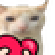

April 28, 2024
April 27, 2024
Began working on /notes, all config files will be moved here as well when I'll have more time.
April 10, 2024
Today I started a project where I'm trying to remake old Apple website. You can already check it out here, but keep in mind that I'll be working on it for at least a few weeks, and until then it won't be the smoothest experience ever.
April 9, 2024
Reworked a couple things here and there, also experimenting with webamp and userboxes (found them in The Nonexistent Fandoms Fandom, what an awesome website you have, dude). Planning to experiment with many other neat utilities I've found. Changing the current header is now on the to-do list, it looks way too dull.
April 8, 2024
Truly these countless personal projects on Neocities create a space so special that I have to try making my own website here. I've never studied HTML and knew almost nothing about it to this day. My plan and sort of a goal here is to create a website I won't be ashamed of, we'll see how it goes. 